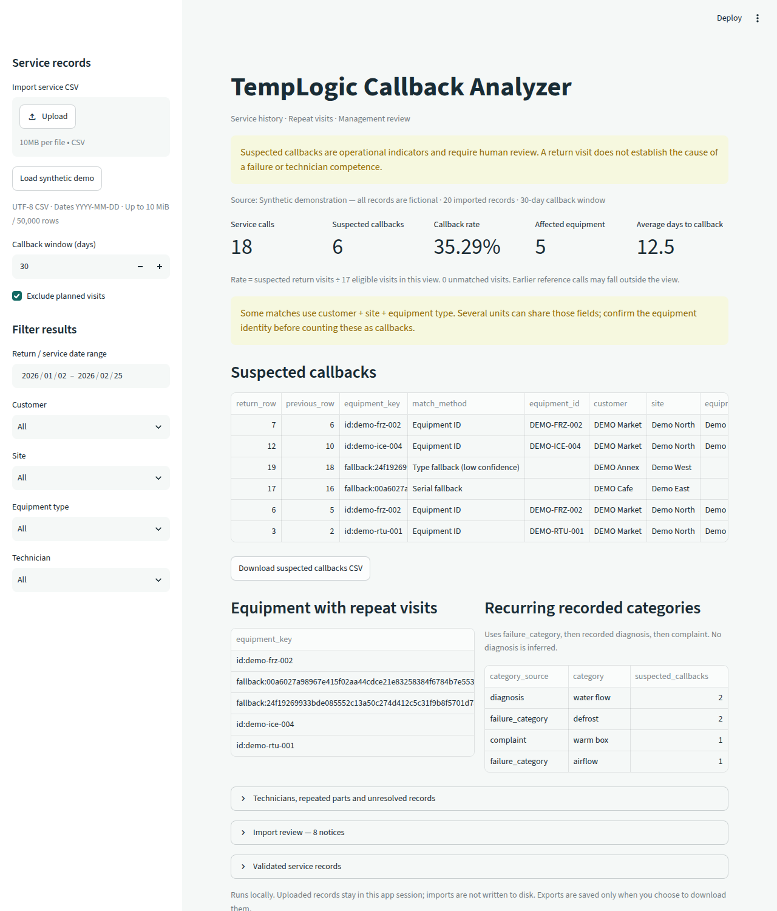

See which service calls came back.Vea cuáles llamadas de servicio regresaron.
Recurva reads your service history from a CSV file and shows the visits that returned to the same equipment within the days you choose. It runs on your own computer: your records never leave it.Recurva lee su historial de servicio de un archivo CSV y le muestra las visitas que regresaron al mismo equipo dentro de los días que usted escoja. Corre en su propia computadora: sus registros nunca salen de ahí.

A repeat visit is a question, not a verdict.Una visita repetida es una pregunta, no un veredicto.
From a spreadsheet export to a list worth reviewing.De una exportación de hoja de cálculo a una lista que vale la pena revisar.
Callback rate at a glanceLa tasa de regresos de un vistazo
Service calls, suspected callbacks, the rate, equipment affected and average days until the return. It shows how the rate was calculated.Llamadas de servicio, regresos sospechados, la tasa, equipos afectados y días promedio hasta el regreso. Enseña cómo se calculó la tasa.
Both visits, side by sideLas dos visitas, lado a lado
Each suspected callback shows the earlier call and the return: technician, diagnosis, repair and notes. Download it as CSV.Cada regreso sospechado muestra la llamada anterior y el regreso: técnico, diagnóstico, reparación y notas. Se descarga en CSV.
Equipment and categories that repeatEquipos y categorías que se repiten
Which units come back the most and which recorded categories repeat. It groups only identical labels and never invents a diagnosis.Qué unidades regresan más y qué categorías registradas se repiten. Solo agrupa etiquetas idénticas y nunca inventa un diagnóstico.
By date, customer, site, type, technicianPor fecha, cliente, sitio, tipo y técnico
Choose a window from 1 to 365 days (30 by default) and leave out planned maintenance if you want.Escoja una ventana de 1 a 365 días (30 de fábrica) y deje fuera el mantenimiento planeado si quiere.
Repeated parts and unresolved recordsPiezas repetidas y registros sin resolver
Parts recorded on at least two visits to the same unit, and records left open or pending.Piezas anotadas en al menos dos visitas a la misma unidad, y registros que quedaron abiertos o pendientes.
It tells you what it could not useLe dice lo que no pudo usar
Bad dates, duplicates and rows it could not match are listed with their row number. Your original file is never changed.Fechas malas, duplicados y renglones que no pudo emparejar salen en una lista con su número de renglón. Su archivo original nunca se cambia.
It only pairs visits it can justify.Solo empareja visitas que puede justificar.
To call two visits the same equipment, it uses the best identifier you have, in this order:Para decir que dos visitas son del mismo equipo usa el mejor identificador que usted tenga, en este orden:
- The equipment ID, when your records have one.El ID del equipo, cuando sus registros lo traen.
- Customer, site and serial number.Cliente, sitio y número de serie.
- Customer, site, name, type, manufacturer and model.Cliente, sitio, nombre, tipo, fabricante y modelo.
- Customer, site and type only: marked “low confidence”, because several units can share those.Solo cliente, sitio y tipo: marcado como “baja confianza”, porque varias unidades pueden compartirlos.
- No fuzzy matching. If it is ambiguous, it leaves the visit unmatched and tells you.Sin coincidencias aproximadas. Si es ambiguo, deja la visita sin emparejar y se lo dice.
Export your service callsExporte sus llamadas de servicio
A CSV file with at least a date column (YYYY-MM-DD). Other columns are optional.Un archivo CSV con al menos una columna de fecha (AAAA-MM-DD). Las demás columnas son opcionales.
Open it in the programÁbralo en el programa
Upload the file, or load the sample to try it.Suba el archivo, o cargue la muestra para probar.
Review and downloadRevise y descargue
Set the window, filter, and download the list for your meeting.Ponga la ventana, filtre y descargue la lista para su junta.
What it does not do yet.Lo que todavía no hace.
- The screen is in English only for now.Por ahora la pantalla está solo en inglés.
- CSV files only, up to 10 MB or 50,000 rows. No Excel import yet.Solo archivos CSV, hasta 10 MB o 50,000 renglones. Todavía no importa Excel.
- Dates must be written YYYY-MM-DD. There is no screen yet to map your own column names.Las fechas deben venir como AAAA-MM-DD. Todavía no hay pantalla para acomodar los nombres de sus columnas.
- It does not save your review decisions; each session starts from the file.No guarda sus decisiones de revisión; cada sesión empieza desde el archivo.
- It is for one computer, without a login. It is not made to be put on the internet or shared between companies.Es para una computadora, sin inicio de sesión. No está hecho para ponerse en internet ni compartirse entre compañías.
- It has not had an independent security audit.No ha tenido una auditoría de seguridad independiente.
Before you ask.Antes de que pregunte.
Do my records go anywhere?¿Mis registros van a algún lado?
No. The file is analyzed in memory on your computer and is not written to disk. Nothing is sent out.No. El archivo se analiza en la memoria de su computadora y no se escribe en el disco. No se manda nada afuera.
Does it use AI?¿Usa IA?
No. It follows fixed rules you can read, so the same file always gives the same result.No. Sigue reglas fijas que usted puede leer, así que el mismo archivo siempre da el mismo resultado.
What do I need to run it?¿Qué ocupo para correrlo?
A computer with Python 3.12 or newer. It opens in your web browser.Una computadora con Python 3.12 o más nuevo. Se abre en su navegador.
Can I buy it today?¿Puedo comprarlo hoy?
Not yet. Write to us and you will hear first.Todavía no. Escríbanos y será de los primeros en saber.
Want to know when it is ready?¿Quiere saber cuando esté listo?
Send one email. You get one reply when Recurva is available, and nothing else.Mande un correo. Recibe una respuesta cuando Recurva esté disponible, y nada más.
Email usEscríbanos